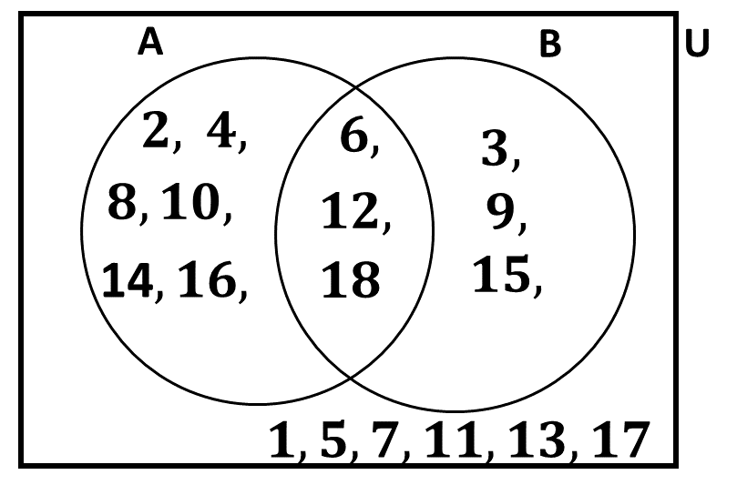
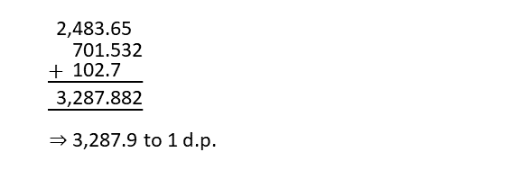
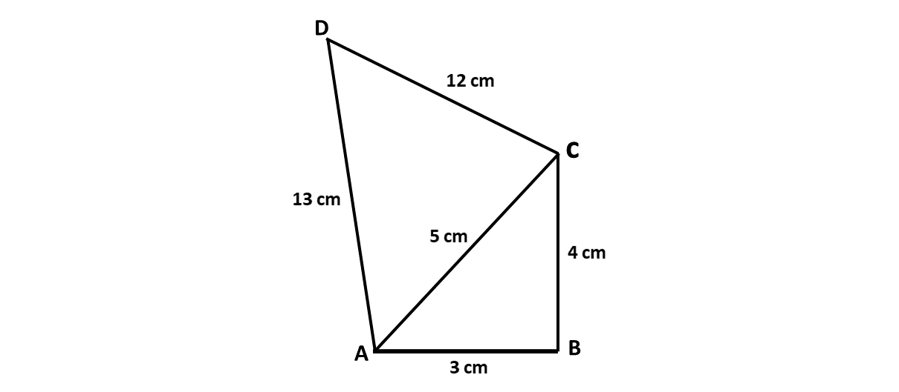
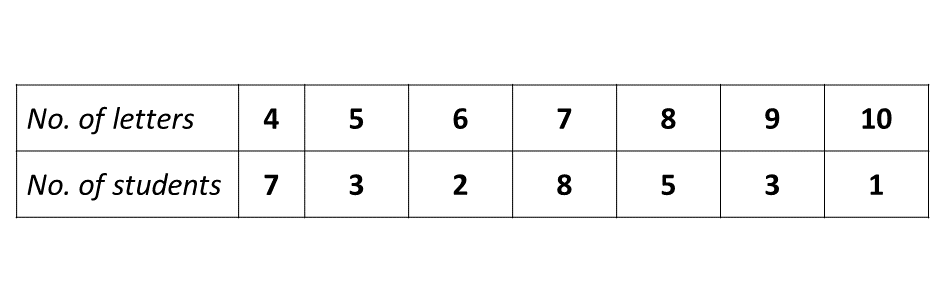

BECE
Year to Practice:
1990
1991
1992
1993
1994
1995
1996
1997
1998
1999
2000
2001
2002A
2002B
2003
2004
2005
2006
2007
2008
2009
2010
2011
2012
2013
2014
2015
2016
2017
2018
2019
2020
2021
2022
2023
2024
PAST QUESTIONS 2010
Time yourself to improve on your speed. You are to use not more than 60 minutes for this section.
Click on the link below when you are ready.
Try the questions first, using not more than 15 minutes for each question, and watch the accompanying videos to see how the questions are solved.
Question 1
-
Factorize \((m + n)(2x - y) - x(m + n)\)
Question 1.a.
\((m + n)(2x - y) - x(m + n)\)
\(\Rightarrow (m + n)(2x - y - x)\)
\(\Rightarrow (m + n)(2x - x - y)\)
\(\Rightarrow (m + n)(x - y)\)
-
\(A\) and \(B\) are subsets of a universal set
\(\hspace{0.5cm}\mathbb{U} = \) {1, 2, 3, 4, 5, 6, 7, 8, 9, 10, 11, 12, 13, 14, 15, 16, 17, 18}
\(\hspace{0.5cm}\)such that
\(\hspace{0.5cm}\)\(A =\) {even numbers} and
\(\hspace{0.5cm} B =\) {multiples of 3}.\(\hspace{0.5cm} i)\) List the elements of the sets \(A, B, (A \cap B), (A \cup B)\) and \((A \cup B)^\prime\)
\(\hspace{0.5cm} ii)\) Illustrate the information in \((i)\) on a Venn diagram.
Question 1.b.i.
\(\mathbb{U} = \) {1, 2, 3, 4, 5, 6, 7, 8, 9, 10, 11, 12, 13, 14, 15, 16, 17, 18}
\(A =\) {even numbers}
\(\Rightarrow\)\(A =\) {2, 4, 6, 8, 10, 12, 14, 16, 18}
\(B =\) {multiples of 3}
\(\Rightarrow B =\) {3, 6, 9, 12, 15, 18}
\(A \cap B\) \(=\) {6, 12, 18}
\(A \cup B\) \(=\) {2, 3, 4, 6, 8, 9, 10, 12, 14, 15, 16, 18}
\((A \cup B)^\prime\) \(=\) {1, 5, 7, 11, 13, 17}
Question 1.b.ii.

-
Find the values of \(x\) and \(y\) in the vector equation:
\(\hspace{0.1cm} \begin{pmatrix}5 \\ 3\end{pmatrix} + 2\begin{pmatrix}x \\ y\end{pmatrix} - \begin{pmatrix}1 \\ -7\end{pmatrix} = 0\)
Question 1.c.
\(\begin{pmatrix}5 \\ 3\end{pmatrix} + 2\begin{pmatrix}x \\ y\end{pmatrix} - \begin{pmatrix}1 \\ -7\end{pmatrix} = 0\)
Solving for \(x\):
\(5 + 2x - 1 = 0\)
\(\Rightarrow\) \(2x + 4 = 0\)
\(\Rightarrow\) \(2x = -4\)
\(\Rightarrow\) \(\dfrac{2x}{2} = \dfrac{-4}{2}\)
\(\Rightarrow\) \(x = -2\)
Solving for \(y\):
\(3 + 2y - (-7) = 0\)
\(\Rightarrow\) \(3 + 2y + 7 = 0\)
\(\Rightarrow\) \(2y + 10 = 0\)
\(\Rightarrow\) \(2y = -10\)
\(\Rightarrow\) \(\dfrac{2y}{2} = \dfrac{-10}{2}\)
\(\Rightarrow\) \(y = -5\)
\(\therefore\) \(\underline{x \ \text{is} -2 \ \text{and} \ y \ \text{is} -5}\)
Question 2
-
Find the sum of 2,483.65, 701.532 and 102.7, leaving your answer to one decimal place.
Question 2.a.
Finding the sum:

-
In the quadrilateral \(ABCD\), \(|AB| = 3\) cm, \(|BC| = 4\) cm, \(|CD| = 12\) cm and angle \(ABC = 90^\circ\) and angle \(ACD = 90^\circ\).
Calculate:
\(\hspace{0.5cm} i)\) the perimeter of \(ABCD\)
\(\hspace{0.5cm} ii)\) the area of \(ABCD\).
Question 2.b.i.
Perimeter = distance around an object.
Perimeter of \(ABCD\)
\(\Rightarrow\) \(|AB| + |BC| + |CD| + |DA|\)
\(\Rightarrow\) \(3 + 4 + 12 + 13\)
\(\Rightarrow\) \(32 \ cm\)
\(\therefore\) the perimeter of \(ABCD\) is 32 cm
Question 2.b.ii.
Area of a triangle
\(\Rightarrow\) \(\frac{1}{2} \times length \times height\)
Area of \(\triangle ABC\)
\(\Rightarrow\) \(\frac{1}{2} \times 3 \times 4\)
\(\Rightarrow\) \(\frac{1}{2} \times 12\)
\(\Rightarrow\) \(6\) cm\(^2\)
Area of \(\triangle ACD\)
\(\Rightarrow\) \(\frac{1}{2} \times 5 \times 12\)
\(\Rightarrow\) \(\frac{1}{2} \times 60\)
\(\Rightarrow\) \(30\) cm\(^2\)
Total area of \(ABCD\)
\(\Rightarrow\) \(6 + 30\)
\(\Rightarrow\) \(36\) cm\(^2\)
\(\therefore\) the area of ABCD is \(36\) cm\(^2\)
Question 3
-
Evaluate \(\dfrac{2^7 \times 3^4 \times 5^3}{2^3 \times 3^2 \times 5^2}\), leaving your answer in standard form.
Question 3.a.
\(\dfrac{2^7 \times 3^4 \times 5^3}{2^3 \times 3^2 \times 5^2}\)
\(\Rightarrow\) \(\dfrac{2^7}{2^3} \times \dfrac{3^4}{3^2} \times \dfrac{5^3}{5^2}\)
\(\Rightarrow\) \(2^{(7-3)} \times 3^{(4-2)} \times 5^{(3-2)}\)
\(\Rightarrow\) \(2^4 \times 3^2 \times 5^1\)
\(\Rightarrow\) \(16 \times 9 \times 5\)
\(\Rightarrow\) \(16 \times 45\)
\(\Rightarrow\) \(720\)
\(\Rightarrow\) \(7.20 \times 10^2\) in standard form.
-
Kwame rode a bicycle for a distance of \(x\) km and walked for another \(\frac{1}{2}\) hour at a rate of 6 km per hour. If Kwame covered a total distance of 10 km, find the distance \(x\) he covered by bicycle.
Question 3
Distance covered by bicycle \(= x\) km
Time spent walking \(= \frac{1}{2}\) hour
Walking speed \(= 6\) km/h
\(\text{speed} = \frac{\text{distance}}{\text{time}}\)
\(\Rightarrow \text{distance} = \text{speed} \times \text{time}\)
\(\Rightarrow \text{distance walked} = 6 \times \frac{1}{2}\)
\(\Rightarrow \text{distance walked} = 3\) km
Total distance covered
\(\Rightarrow x + 3 = 10\)
\(\Rightarrow x = 10 - 3\)
\(\Rightarrow x = 7\) km
\(\therefore\) Kwame covered 7 km by bicycle.
-
A rectangular tank of length 22 cm, width 9 cm and height 16 cm is filled with water. The water is poured into a cylindrical container of radius 6 cm. Calculate the
\(\hspace{0.5cm} (i)\) volume of the rectangular tank.
\(\hspace{0.5cm} (ii)\) depth of water in the cylindrical container. [Take \(\pi = \frac{22}{7}\)]
Question 3.c.i
\(\text{length, L} = 22\) cm
\(\text{width, W} = 9\) cm
\(\text{height, H} = 16\) cm
\(\text{Volume} = L \times W \times H\)
Volume of tank:
\(\Rightarrow 22 \times 9 \times 16\)
\(\Rightarrow 3,168\) cm\(^3\)
\(\therefore\) the volume of the rectangular tank is \(3,168\) cm\(^3\)
Question 3.c.ii
Volume of water \(= 3,168\) cm\(^3\)
Base radius \(= 6\) cm
\(\Rightarrow 3,168 = \pi r^2 h\)
\(\Rightarrow 3,168 = \frac{22}{7} \times 6^2 \times h\)
\(\Rightarrow 3,168 = \frac{22 \times 6^2 \times h}{7}\)
\(\Rightarrow 3,168 \times 7 = 22 \times 36 \times h\)
\(\Rightarrow h = \frac{3,168 \times 7}{22 \times 36}\)
\(\Rightarrow h = 4 \times 7\)
\(\Rightarrow h = 28\) cm
\(\therefore\) the depth of the water is 28 cm
Question 4
-
Simplify: \(7\frac{2}{3} - 4\frac{5}{6} + 2\frac{3}{8}\)
Question
-
The area of a trapezium is \(31.5\) cm\(^2\). If the parallel sides are of length \(7.3\) cm and \(5.3\) cm, calculate the perpendicular distance between them.
Question
-
The marks scored by four students in a Mathematics test are as follows:
\(\hspace{0.5cm}\) Esi \(\hspace{0.95cm}\) \( - \) \(\hspace{0.5cm}\) 92
\(\hspace{0.5cm}\) Seth \(\hspace{0.6cm}\) \( - \) \(\hspace{0.5cm}\) 85
\(\hspace{0.5cm}\) Mary \(\hspace{0.5cm}\) \( - \) \(\hspace{0.5cm}\) 65
\(\hspace{0.5cm}\) Efe \(\hspace{0.9cm}\) \( - \) \(\hspace{0.5cm}\) \(x\)\(\hspace{0.5cm} i)\) Write down an expression for the mean (average) of the marks.
\(\hspace{0.5cm} ii)\) If the mean is less than \(80\), write a linear inequality for the information.
\(\hspace{0.5cm} iii)\) Find the possible marks Efe scored in the test. Represent your answer on the number line.
Question
Question 5
-
Solve \(\dfrac{4x - 3}{2} = \frac{8x - 10}{8} + 2\frac{3}{4}\)
Question
-
Using a scale of 2 cm to 1 unit on both axes, draw two perpendicular lines \(OX\) and \(OY\) on a graph sheet. Mark the \(x\)-axis from \(-5\) to \(5\) and the \(y\)-axis from \(-6\) to \(6\).
\(\hspace{0.5cm} i)\) Plot the points \(A(2, 3)\) and \(B(-3, 4)\) and join them with a long straight line.
\(\hspace{0.5cm} ii)\) Plot on the same graph sheet , the points \(C(4, 2)\) and \(D(-2, -3)\) and join them with a long straight line to meet the line, and through, \(AB\).
\(\hspace{0.5cm} iii)\) Measure the angle formed between the lines \(AB\) and \(CD\)
\(\hspace{0.5cm} iv)\) Find the coordinates of the point at which the lines through \(AB\) and \(CD\) meet.
Question
Question 6
The following table shows the frequency distribution of the number of letters in the surnames of some students in a school.
-
From the distribution, determine
\(\hspace{0.5cm} i)\) the mode;
\(\hspace{0.5cm} ii)\) the mean.
Question
-
If a student is selected at random, find the probability that his\her name will contain more than 7 letters.
Question
-
Draw a bar chart for the distribution.
Question
For sponsorship or advertisement kindly call or whatsapp on 0208711375 or 0249969740.